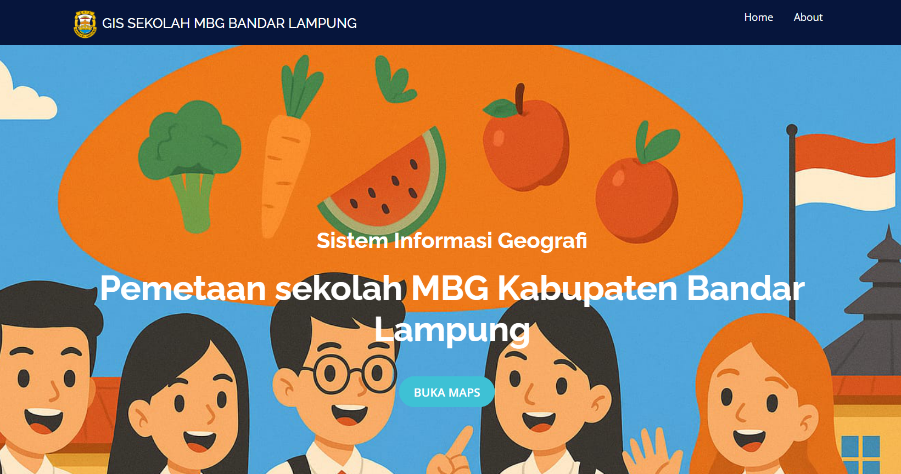
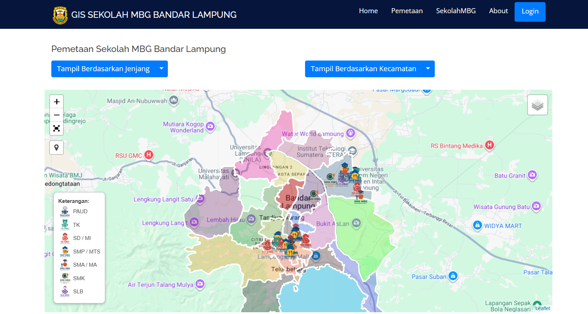

Sistem informasi geografis berbasis web yang digunakan untuk memetakan sekolah penerima Program Makan Bergizi Gratis (MBG) di wilayah Bandar Lampung.


Website GIS Sekolah Penerima Program MBG merupakan aplikasi berbasis web yang dikembangkan untuk membantu menampilkan informasi dan lokasi sekolah penerima Program Makan Bergizi Gratis di wilayah Bandar Lampung.
Sistem ini menggunakan teknologi Sistem Informasi Geografis (GIS) sehingga pengguna dapat melihat persebaran sekolah secara langsung melalui peta digital.
Website ini dibuat untuk mempermudah penyajian informasi mengenai sekolah penerima program MBG serta membantu administrator dalam mengelola data sekolah dan informasi terkait penerima manfaat.
Pengembangan aplikasi menggunakan Laravel sebagai framework utama, MySQL sebagai database, serta Leaflet.js untuk menampilkan peta interaktif dan data geografis.